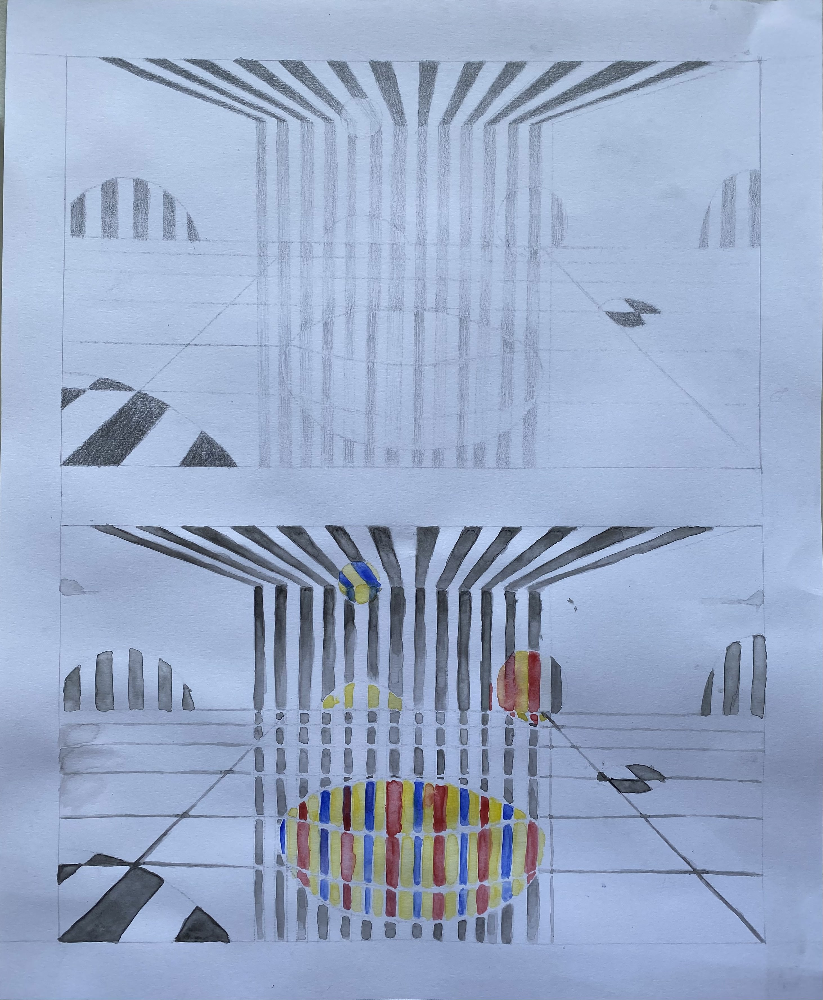
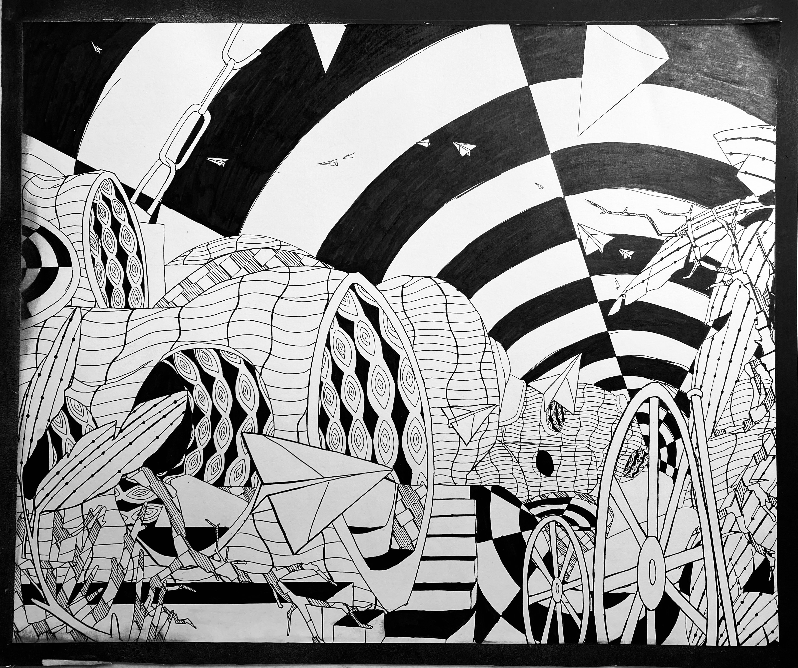
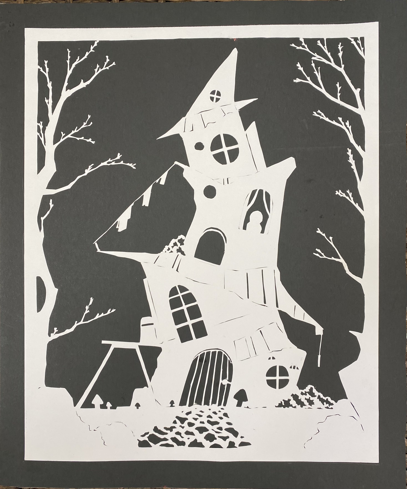

Medium: Bristol sketchbook, Watercolor. This project was created as a demonstration of the concept of basic color theory and associated value as it relates to the colors used.

Medium: 14”17 mixed media paper, Faber-Castell Pitt artist pens. This project was created as a demonstration of the concepts of the visual path, line weight, and repetition of patterns.

Medium: 14”17 mixed media paper. This project was created as a demonstration of the concept of understanding symmetry in composition as well as the utilization of negative/positive space.